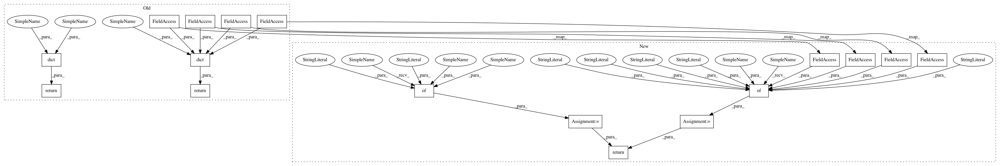

59e7bb4da80b9de3b665c9e986c1b3f8774089a5,sac/algos/sac_v2.py,SAC,get_snapshot,#SAC#Any#,376
Before Change
if self._save_full_state:
return dict(
epoch=epoch,
algo=self
)
else:
return dict(
epoch=epoch,
policy=self._policy,
qf=self._qf,
vf=self._vf,
env=self._env,
)
def __getstate__(self):
Get Serializable state of the RLALgorithm instance.
After Change
if self._save_full_state:
snapshot = {
"epoch": epoch,
"algo": self
}
else:
snapshot = {
"epoch": epoch,
"policy": self._policy,
"qf": self._qf,
"vf": self._vf,
"env": self._env,
}
return snapshot
def __getstate__(self):
Get Serializable state of the RLALgorithm instance.
In pattern: SUPERPATTERN
Frequency: 3
Non-data size: 17
Instances
Project Name: rail-berkeley/softlearning
Commit Name: 59e7bb4da80b9de3b665c9e986c1b3f8774089a5
Time: 2018-05-22
Author: kristian.hartikainen@gmail.com
File Name: sac/algos/sac_v2.py
Class Name: SAC
Method Name: get_snapshot
Project Name: rail-berkeley/softlearning
Commit Name: d2ea56a8ba947ee867ed67454f1756575b7f3da9
Time: 2018-05-27
Author: kristian.hartikainen@gmail.com
File Name: softlearning/algorithms/sac.py
Class Name: SAC
Method Name: get_snapshot
Project Name: rail-berkeley/softlearning
Commit Name: 59e7bb4da80b9de3b665c9e986c1b3f8774089a5
Time: 2018-05-22
Author: kristian.hartikainen@gmail.com
File Name: sac/algos/sac_v2.py
Class Name: SAC
Method Name: get_snapshot
Project Name: rail-berkeley/softlearning
Commit Name: ee235aff686c5ec1048138d799107801df20b819
Time: 2018-05-22
Author: kristian.hartikainen@gmail.com
File Name: sac/algos/sac.py
Class Name: SAC
Method Name: get_snapshot